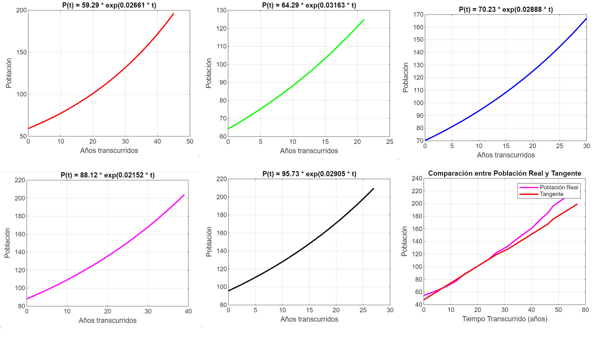
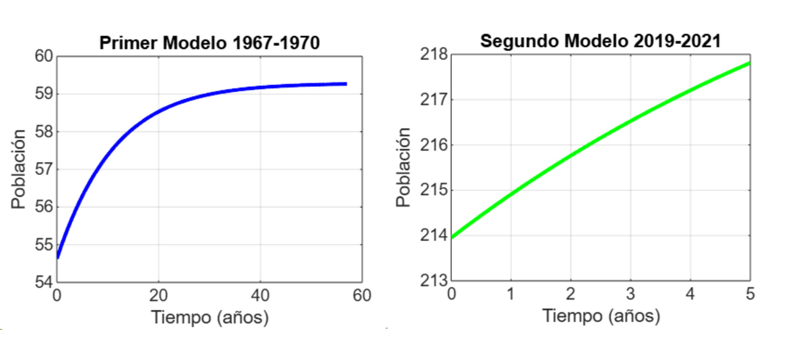

Transformada de Laplace
La transformada de Laplace permite resolver ecuaciones diferenciales complejas, aplicable en modelos avanzados de dinámica poblacional.

\[ \mathcal{L}\{f(t)\} = \int_0^{\infty} e^{-st} f(t) \, dt \]
Este modelo asume un crecimiento exponencial continuo sin restricciones, ideal para poblaciones en crecimiento rápido sin limitantes ambientales.
\(\frac{dP}{dt} = rP\)
Este modelo incorpora la capacidad de carga y limita el crecimiento a un máximo poblacional que el entorno puede sostener.
\(\frac{dP}{dt} = rP \left(1 - \frac{P}{K}\right)\)
La transformada de Laplace permite resolver ecuaciones diferenciales complejas, aplicable en modelos avanzados de dinámica poblacional.
\[ \mathcal{L}\{f(t)\} = \int_0^{\infty} e^{-st} f(t) \, dt \]